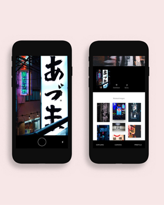

Design Fabric Festival
The inaugural edition of the Design Fabric Festival was held from March 29–31, 2018 at Famous Studios in Mumbai. The event was initiated with the intention to raise the standards of the burgeoning Indian design scene.
Featuring 30 national+international artists – inclusing talks, workshops, exhibitions and gatherings it put Mumbai on the map as one of the global design hubs.
Shrenik Ganatra and I were commissioned to design the identity by the founder and our great friends, Sanket Avlani.
2018
- Client : Design Fabric
- Role: Brand Designer
- Art Direction : Sanket Avlani
- Designers: Shrenik Ganatra, Ninad Kale
- Typeface: Oli Grotesk by Shiva Nallaperumal, Arya Purohit
Shrenik Ganatra and I presenting the process behind the development of the identity
at Design Fabric Festival, 2018.
The identity was inspired by the design elements of Mumbai Suburban Railway. In order to capture the spirit of Mumbai, we looked at the chaos, cacophony, people and several other elements that represent the city.
Carrying over 7.5 million daily commuters, the locals are the lifeline of the city.
Borrowing the color palette and the graphic element of the trains, we wanted to pay tribute to the locals through our design.
Since Design Fabric is already a brand, we decided to incorporate the design element into the festival.
The stripes are at the core of the system. Playing with the width and direction of stripes—the variables, we were able to create a dynamic system that generates infinite variations of the identity. The system of stripes also doubles as a grid for the typographic and visual elements within the identity.


The dynamic identity and the typographic system gives room to play with the visual language and create variety of collaterals while maintaining the core aesthetics.
More from Visual Identity:
-
Design Fabric Festival

-
SEED
